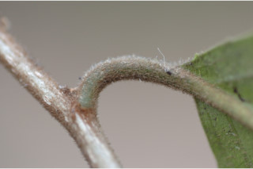
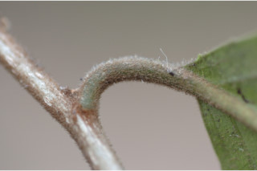

Images :
 



| Habit : | Small trees up to 5 m tall. |
| Leaves : | Leaves simple , alternate , distichous ; stipule caducous ; petiole 0.6-1.2 cm long, canaliculate , fulvous tomentose ; lamina 5-15 x 2.5-5 cm, narrow elliptic to elliptic-oblong , apex gradually acuminate , base acute or cuneate , margin serrate , membranous , fulvous pubescent on midrib and nerves beneath, sparsely pubescent on intercostals ; midrib flat above, slightly pubescent at base; secondary_nerves 8-12 pairs; tertiary_nerves broadly reticulate . |
| Inflorescence / Flower : | Flowers in axillary clusters, pubescent . |
| Fruit and Seed : | Capsule , ellipsoid , to 1 cm long, orange when ripe; seeds with red aril . |